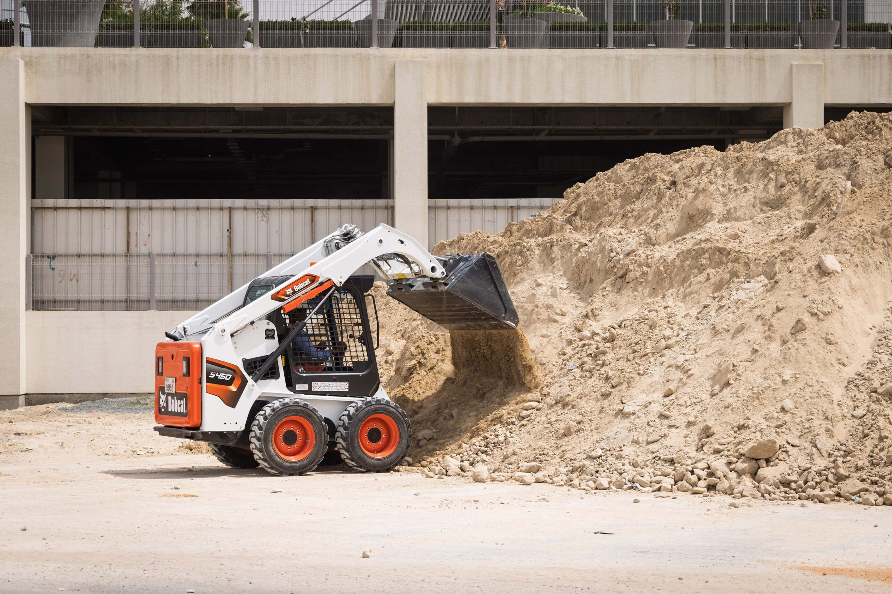

FEZA Servis Eskişehir
Bobcat Hizmeti
Eskişehir'de dar alanlarda kazı, dolgu, tesviye ve saha düzenleme işleri için çevik iş makinesi desteği.
Hizmet Detayı
Eskişehir bobcat hizmeti; dar alanlarda hızlı hareket edebilen, kısa süreli veya planlı saha işlerinde pratik çözüm sunan bir ekipman desteğidir. İşin kapsamına göre çalışma süresi ve ekipman planı belirlenir.
Yapılan İşler
- Kazı, dolgu ve hafriyat desteği
- Zemin tesviye ve saha düzenleme
- Bahçe, tarla, depo çevresi ve şantiye hazırlığı
Neden Bobcat?
- Dar alanlarda rahat çalışır.
- Küçük ve orta ölçekli işler için hızlı çözüm sağlar.
- Planlı işlerde zaman ve iş gücü tasarrufuna yardımcı olur.